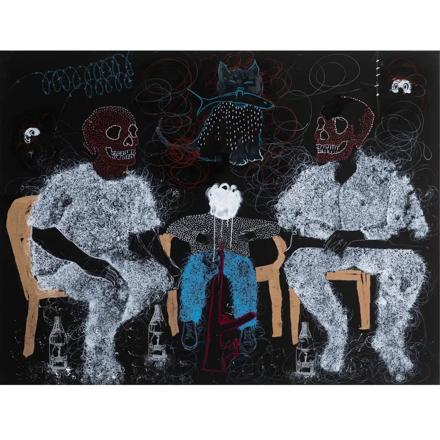

En tant qu’artiste plasticien, Serigne Ibrahima Dieye considère que son rôle est engagé. Il s’agit pour l’artiste de donner à voir ce que l’on ne voit pas ; de faire entendre ce qui se murmure tout bas. Faire apparaître les formes ; matérialiser par l’art les idées comme un ensemble de zones grises - souvent obscures - que l’on placerait dans la lumière pour mieux les observer et mieux les décomposer.
Les personnages des peintures et des installations de Serigne Ibrahima Dieye sont des idées auxquelles l’artiste a donné corps et matière. Ce sont des allégories visuelles de maux qui déchirent les sociétés contemporaines, mais pas seulement : une fois sur la toile, sur le papier, ou incarnées dans le bois, ces idées prennent leur autonomie et deviennent les protagonistes d’un récit dramatique dont la responsabilité de l’interprétation revient aux spectateurs.
Souvent, l’artiste a recours à la figure animale pour mieux dire l’humain et ses torts comme dans les fables, cette forme de récit millénaire aux géographies multiples, de la Perse ancienne à la Méditerranée moyenne-âgeuse, de La Fontaine à Birago Diop.
Pour créer ses oeuvres, Serigne Ibrahima Dieye puise aussi dans la société d’aujourd’hui, ses mythes de succès et ses malédictions ; sa violence et sa vivacité créative ; ses histoires populaires et ses territoires oubliés. Il n’y a pas de hiérachie dans le choix des sujets de l’artiste : il s’agit de se raconter, et ce faisant de se donner matière à se réinventer.
Expositions à la galerie